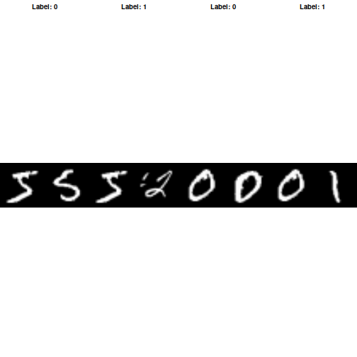
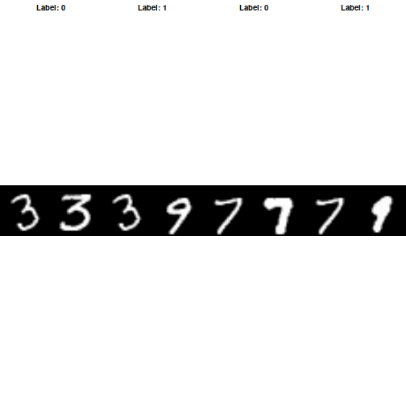
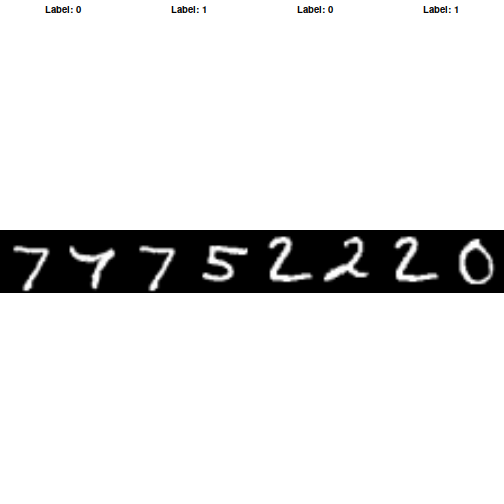

Image similarity estimation using a Siamese Network with a contrastive loss
Source:vignettes/examples/vision/mnist_siamese_graph.Rmd
mnist_siamese_graph.RmdIntroduction
Siamese Networks are neural networks which share weights between two or more sister networks, each producing embedding vectors of its respective inputs.
In supervised similarity learning, the networks are then trained to maximize the contrast (distance) between embeddings of inputs of different classes, while minimizing the distance between embeddings of similar classes, resulting in embedding spaces that reflect the class segmentation of the training inputs.
Load the MNIST dataset
c(c(x_train_val, y_train_val), c(x_test, y_test)) %<-% dataset_mnist()Define training and validation sets
# Keep 50% of the training data in the validation set.
train_indices <- seq_len(30000L)
validation_indices <- seq.int(30001L, nrow(x_train_val))
x_train <- x_train_val[train_indices, , , drop = FALSE]
x_val <- x_train_val[validation_indices, , , drop = FALSE]
y_train <- y_train_val[train_indices]
y_val <- y_train_val[validation_indices]
rm(x_train_val, y_train_val)
# Change the data type to a floating point format and make the channel
# dimension explicit.
as_image_tensor <- function(x) {
x |>
op_convert_to_tensor(dtype = "float32") |>
op_expand_dims(axis = -1)
}
x_train <- as_image_tensor(x_train)
x_val <- as_image_tensor(x_val)
x_test <- as_image_tensor(x_test)Create pairs of images
We will train the model to differentiate between digits of different
classes. For example, digit 0 needs to be differentiated
from the rest of the digits (1 through 9),
digit 1 from 0 and 2 through
9, and so on. To carry this out, we select N random images
from class A (for example, digit 0) and pair them with N
random images from another class B (for example, digit 1).
We repeat this process for all classes of digits.
make_pairs <- function(x, y) {
num_classes <- max(y) + 1L
digit_indices <- lapply(
seq_len(num_classes) - 1L,
\(label) which(y == label)
)
matching_indices <- vapply(
seq_along(y),
\(i) sample(digit_indices[[y[[i]] + 1L]], size = 1L),
integer(1)
)
nonmatching_labels <- vapply(
y,
\(label) {
candidates <- setdiff(seq_len(num_classes) - 1L, label)
as.integer(sample(candidates, size = 1L))
},
integer(1)
)
nonmatching_indices <- vapply(
seq_along(y),
\(i) {
sample(digit_indices[[nonmatching_labels[[i]] + 1L]], size = 1L)
},
integer(1)
)
first_indices <- rep(seq_along(y), each = 2L)
second_indices <- as.vector(rbind(matching_indices, nonmatching_indices))
list(
pair1 = op_take(x, first_indices, axis = 1),
pair2 = op_take(x, second_indices, axis = 1),
labels = as.numeric(rep(c(0, 1), times = length(y)))
)
}
pairs_train <- make_pairs(x_train, y_train)
pairs_val <- make_pairs(x_val, y_val)
pairs_test <- make_pairs(x_test, y_test)
rm(x_train, x_val, x_test, y_train, y_val, y_test)We get 60,000 training pairs. Each pair contains two images, and each
image has shape (28, 28, 1).
dim(pairs_train$pair1)## [1] 60000 28 28 1Split the training pairs:
x_train_1 <- pairs_train$pair1
x_train_2 <- pairs_train$pair2
labels_train <- pairs_train$labelsSplit the validation pairs:
x_val_1 <- pairs_val$pair1
x_val_2 <- pairs_val$pair2
labels_val <- pairs_val$labelsSplit the test pairs:
x_test_1 <- pairs_test$pair1
x_test_2 <- pairs_test$pair2
labels_test <- pairs_test$labelsVisualize pairs and their labels
visualize <- function(pairs, labels, to_show = 6L, num_col = 3L,
predictions = NULL, test = FALSE) {
num_row <- max(to_show %/% num_col, 1L)
to_show <- num_row * num_col
indices <- seq_len(to_show)
pair1 <- op_take(pairs$pair1, indices, axis = 1) |> as.array()
pair2 <- op_take(pairs$pair2, indices, axis = 1) |> as.array()
prediction_values <- if (is.null(predictions)) {
NULL
} else {
drop(as.array(predictions))[indices]
}
old_par <- par(no.readonly = TRUE)
on.exit(par(old_par), add = TRUE)
par(mfrow = c(num_row, num_col), mar = c(0, 0, 2, 0))
for (i in indices) {
image <- cbind(pair1[i, , , 1L], pair2[i, , , 1L])
plot(as.raster(image / 255))
label <- if (test) {
sprintf(
"True: %d | Pred: %.5f",
as.integer(labels[[i]]),
prediction_values[[i]]
)
} else {
sprintf("Label: %d", as.integer(labels[[i]]))
}
title(main = label)
}
invisible(NULL)
}Inspect training pairs:
visualize(pairs_train, labels_train, to_show = 4L, num_col = 4L)
Inspect validation pairs:
visualize(pairs_val, labels_val, to_show = 4L, num_col = 4L)
Inspect test pairs:
visualize(pairs_test, labels_test, to_show = 4L, num_col = 4L)
Define the model
There are two input layers, each leading to its own network, which
produces embeddings. A Lambda layer then merges them using
Euclidean
distance.
euclidean_distance <- function(vectors) {
c(x, y) %<-% vectors
sum_square <- op_sum(op_square(x - y), axis = 2, keepdims = TRUE)
op_sqrt(op_maximum(sum_square, config_epsilon()))
}
create_embedding_network <- function() {
inputs <- keras_input(shape = c(28, 28, 1))
outputs <- inputs |>
layer_batch_normalization() |>
layer_conv_2d(
filters = 4, kernel_size = c(5, 5), activation = "tanh"
) |>
layer_average_pooling_2d(pool_size = c(2, 2)) |>
layer_conv_2d(
filters = 16, kernel_size = c(5, 5), activation = "tanh"
) |>
layer_average_pooling_2d(pool_size = c(2, 2)) |>
layer_flatten() |>
layer_batch_normalization() |>
layer_dense(units = 10, activation = "tanh")
keras_model(inputs, outputs, name = "embedding")
}
embedding_network <- create_embedding_network()
input_1 <- keras_input(shape = c(28, 28, 1))
input_2 <- keras_input(shape = c(28, 28, 1))
# Reusing the same embedding network shares its weights between the towers.
tower_1 <- embedding_network(input_1)
tower_2 <- embedding_network(input_2)
# Distance is the output; there is no final dense sigmoid layer.
distance <- list(tower_1, tower_2) |>
layer_lambda(euclidean_distance)
siamese <- keras_model(
inputs = list(input_1, input_2),
outputs = distance
)Define the contrastive loss
contrastive_loss <- function(margin = 1) {
function(y_true, y_pred) {
square_pred <- op_square(y_pred)
margin_square <- op_square(op_maximum(margin - y_pred, 0))
op_mean(
(1 - y_true) * square_pred +
y_true * margin_square
)
}
}Define the accuracy metric
accuracy <- function(y_true, y_pred) {
y_true <- op_cast(y_true, "float32")
y_true <- op_reshape(y_true, c(-1))
y_pred <- op_reshape(y_pred, c(-1))
# 0 for similar (< 0.5), 1 for dissimilar (> 0.5).
predictions <- op_cast(y_pred > 0.5, "float32")
op_mean(op_equal(y_true, predictions))
}Compile the model with the contrastive loss
siamese |> compile(
loss = contrastive_loss(margin),
optimizer = "rmsprop",
metrics = list(accuracy)
)
summary(siamese)## Model: "functional"
## ┏━━━━━━━━━━━━━━━━━━━┳━━━━━━━━━━━━━━━━━┳━━━━━━━━━━━┳━━━━━━━━━━━━━━━━┳━━━━━━━┓
## ┃ Layer (type) ┃ Output Shape ┃ Param # ┃ Connected to ┃ Trai… ┃
## ┡━━━━━━━━━━━━━━━━━━━╇━━━━━━━━━━━━━━━━━╇━━━━━━━━━━━╇━━━━━━━━━━━━━━━━╇━━━━━━━┩
## │ input_layer_1 │ (None, 28, 28, │ 0 │ - │ - │
## │ (InputLayer) │ 1) │ │ │ │
## ├───────────────────┼─────────────────┼───────────┼────────────────┼───────┤
## │ input_layer_2 │ (None, 28, 28, │ 0 │ - │ - │
## │ (InputLayer) │ 1) │ │ │ │
## ├───────────────────┼─────────────────┼───────────┼────────────────┼───────┤
## │ embedding │ (None, 10) │ 5,318 │ input_layer_1… │ Y │
## │ (Functional) │ │ │ input_layer_2… │ │
## ├───────────────────┼─────────────────┼───────────┼────────────────┼───────┤
## │ lambda (Lambda) │ (None, 1) │ 0 │ embedding[0][… │ - │
## │ │ │ │ embedding[1][… │ │
## └───────────────────┴─────────────────┴───────────┴────────────────┴───────┘
## Total params: 5,318 (20.77 KB)
## Trainable params: 4,804 (18.77 KB)
## Non-trainable params: 514 (2.01 KB)Train the model
history <- siamese |> fit(
x = list(x_train_1, x_train_2),
y = labels_train,
validation_data = list(
list(x_val_1, x_val_2),
labels_val
),
batch_size = batch_size,
epochs = epochs
)## Epoch 1/10
## 3750/3750 - 14s - 4ms/step - custom_metric_1: 0.7390 - loss: 0.2347 - val_custom_metric_1: 0.8233 - val_loss: 0.1280
## Epoch 2/10
## 3750/3750 - 10s - 3ms/step - custom_metric_1: 0.8402 - loss: 0.1236 - val_custom_metric_1: 0.8798 - val_loss: 0.0998
## Epoch 3/10
## 3750/3750 - 10s - 3ms/step - custom_metric_1: 0.8807 - loss: 0.1023 - val_custom_metric_1: 0.9042 - val_loss: 0.0848
## Epoch 4/10
## 3750/3750 - 10s - 3ms/step - custom_metric_1: 0.9021 - loss: 0.0904 - val_custom_metric_1: 0.9207 - val_loss: 0.0748
## Epoch 5/10
## 3750/3750 - 10s - 3ms/step - custom_metric_1: 0.9168 - loss: 0.0829 - val_custom_metric_1: 0.9319 - val_loss: 0.0682
## Epoch 6/10
## 3750/3750 - 10s - 3ms/step - custom_metric_1: 0.9262 - loss: 0.0779 - val_custom_metric_1: 0.9387 - val_loss: 0.0636
## Epoch 7/10
## 3750/3750 - 10s - 3ms/step - custom_metric_1: 0.9327 - loss: 0.0743 - val_custom_metric_1: 0.9447 - val_loss: 0.0604
## Epoch 8/10
## 3750/3750 - 11s - 3ms/step - custom_metric_1: 0.9367 - loss: 0.0716 - val_custom_metric_1: 0.9496 - val_loss: 0.0581
## Epoch 9/10
## 3750/3750 - 12s - 3ms/step - custom_metric_1: 0.9398 - loss: 0.0696 - val_custom_metric_1: 0.9525 - val_loss: 0.0564
## Epoch 10/10
## 3750/3750 - 12s - 3ms/step - custom_metric_1: 0.9418 - loss: 0.0680 - val_custom_metric_1: 0.9548 - val_loss: 0.0548